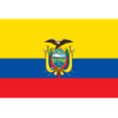

Messico fuori dal Mondiale 2026: la maledizione degli ottavi colpisce anche in casa
Il Mondiale in casa del Messico si è fermato agli ottavi, ancora una volta: 2-3 con l'Inghilterra il 5 luglio all'Estadio Azteca, nonostante l'assalto finale in superiorità numerica.

Come è finita ai Mondiali 2026
Il Mondiale in casa del Messico si è fermato agli ottavi, ancora una volta: 2-3 con l'Inghilterra il 5 luglio all'Estadio Azteca, nonostante l'assalto finale in superiorità numerica.
Il Messico ai Mondiali 2026: la situazione
Il cammino ai Mondiali 2026 si è chiuso agli ottavi di finale.
I giocatori chiave
I protagonisti in questo Mondiale per rendimento e minuti giocati.


il Messico: le partite ai Mondiali 2026
Il cammino nel torneo finora — 4 vittorie, 0 pareggi e 1 sconfitte.
2026
 InghilterraCasa
InghilterraCasa2026

EcuadorCasa2026
 CechiaTrasferta
CechiaTrasferta2026
 Corea del SudCasa
Corea del SudCasa2026
 SudafricaCasa
SudafricaCasaPunti di forza e debolezze
Punti di forza. Il fattore campo ha funzionato a lungo: girone chiuso in testa senza subire gol, Ecuador battuto ai sedicesimi e un Azteca che ha spinto fino all'ultimo pallone.
Debolezze. Contro la prima big del tabellone è arrivata la conferma: manca il salto di qualità. Nemmeno in vantaggio di un uomo, dopo il rosso a Quansah, il Tri ha trovato il pari.
Gli uomini chiave
Sotto la guida del CT Javier Aguirre, i giocatori simbolo sono Guillermo Ochoa, Edson Álvarez, Julián Quiñones. Sono loro a fare la differenza nei momenti decisivi.
La storia ai Mondiali
Miglior risultato il quarto di finale da paese ospitante (1970 e 1986). La maledizione degli ottavi ha colpito anche nel Mondiale di casa.
Il bilancio del torneo
L'obiettivo dichiarato era rompere la maledizione degli ottavi: non è successo nemmeno davanti al proprio pubblico. Resta un torneo dignitoso, chiuso a testa alta con l'Inghilterra.
 Spagna · quota 1,67
Spagna · quota 1,67Le altre favorite


Domande frequenti
il Messico può ancora vincere i Mondiali 2026?
No: l'eliminazione è arrivata agli ottavi di finale (2-3 contro Inghilterra). L'obiettivo dichiarato era rompere la maledizione degli ottavi: non è successo nemmeno davanti al proprio pubblico. Resta un torneo dignitoso, chiuso a testa alta con l'Inghilterra.
Perché non ci sono più quote sulla vittoria?
Con l'eliminazione i bookmaker hanno chiuso il mercato sulla vittoria finale di questa nazionale.
Chi sono i giocatori chiave del Messico?
Tra gli uomini più importanti ci sono Guillermo Ochoa, Edson Álvarez, Julián Quiñones, guidati dal CT Javier Aguirre.
Chi è il CT del Messico?
Il commissario tecnico è Javier Aguirre.
Doveva essere il Mondiale della liberazione, davanti alla propria gente, e si è chiuso come tutti gli altri: agli ottavi. Il 5 luglio, all'Estadio Azteca, l'Inghilterra ha battuto il Tri 3-2 in una delle partite più drammatiche del torneo, e il famigerato "quinto partido" — la partita che il Messico non vince mai — resta un tabù anche da padroni di casa. Stavolta, però, fa più male del solito.
Com'è arrivata l'eliminazione
La serata dell'Azteca è stata di quelle che restano. Sotto contro un'Inghilterra più cinica, il Messico si è ritrovato il match in mano quando Quansah si è fatto espellere e i Tre Leoni sono rimasti in dieci. Sul 3-2, con lo stadio che spingeva da bolgia vera, il Tri ha buttato dentro tutto quello che aveva. Il pareggio non è mai arrivato. Kane, tra gli altri, aveva colpito ancora — sesto gol del suo torneo — e l'Inghilterra ha portato a casa la qualificazione coi denti.
Il paradosso: fino a quella sera il Messico non aveva mai perso. Girone chiuso in vetta — 2-0 al Sudafrica, 1-0 alla Corea del Sud, 3-0 alla Cechia — e un 2-0 all'Ecuador ai trentaduesimi il 30 giugno che aveva acceso il Paese.
Perché il Messico è uscito
A rivedere la partita, il copione è quello di sempre, solo con più rimpianto:
- Il gap contro le big: quattro partite senza subire gol contro squadre abbordabili, poi tre reti incassate al primo avversario di fascia alta.
- Cinismo mancato: contro dieci uomini, con l'Azteca alle spalle, l'occasione era lì. È mancato il gol pesante, quello che le grandi trovano.
- La testa: la storia del quinto partido pesa, e nei minuti finali si è visto più affanno che lucidità.
I numeri del torneo del Tri
Cinque partite: quattro vittorie e una sconfitta. Dieci gol fatti, tre subiti — tutti e tre nella serata fatale con l'Inghilterra. Quiñones miglior marcatore con due reti, l'Azteca sempre pieno, un girone dominato. Numeri che raccontano il miglior Messico degli ultimi cicli, ed è questa la beffa: non è bastato lo stesso.
Cosa resta di questo Mondiale
Resta un dato che brucia: dal 1994 il Tri esce sempre agli ottavi, otto edizioni consecutive contando questa. Nemmeno il fattore campo, l'altitudine e un tabellone tutto sommato gentile hanno rotto la catena. Il quinto partido è diventato ufficialmente una questione psicologica prima che tecnica.
La generazione attuale però qualcosa lascia: il gruppo ha retto il peso del Mondiale in casa fino all'ultimo respiro, e i quarti mancati per un gol contro una semifinalista non sono la disfatta che qualcuno racconterà. Il ciclo verso il 2030 riparte da qui.
E per chi scommette?
Il mercato sulla vittoria finale del Messico è chiuso: eliminato agli ottavi, il Tri non ha più quote sul titolo. Il torneo intanto è arrivato alle semifinali: Francia (2.49), Spagna (4.30), Inghilterra (4.37) e Argentina (5.63) si giocano tutto il 14 e 15 luglio, con la finale il 19 al MetLife Stadium.
Nota per chi ama le storie circolari: l'Inghilterra che ha spento il sogno messicano è poi passata anche sulla Norvegia nei quarti, e il 15 luglio sfida l'Argentina per un posto in finale.